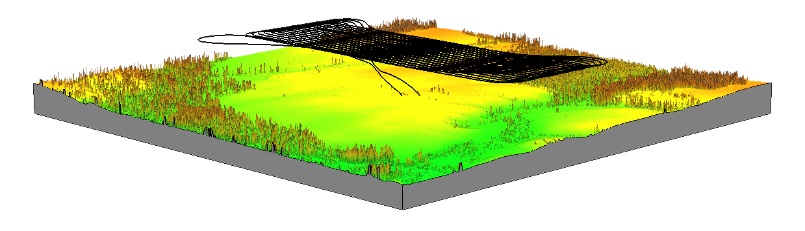
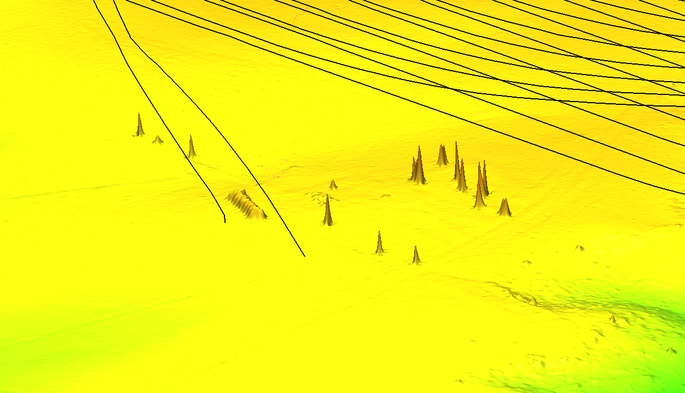
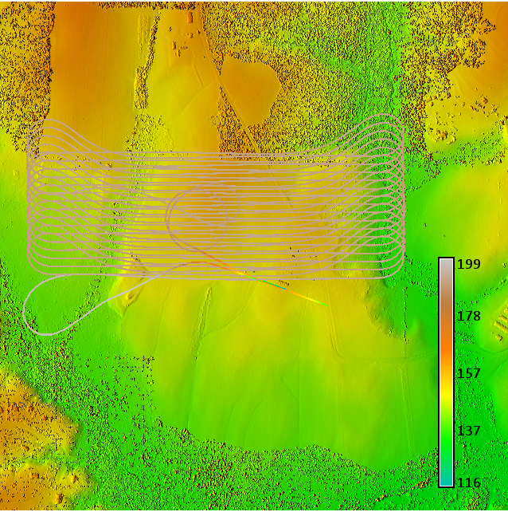

Methodology
A flight plan for a series of UAS flights over the Mid Pines fields to capture the evolution of a gully. I will use the time series of elevation data to test a gully / landscape evolution model that I am developing. The flight takes off and lands behind a small building on a lawn to the south of the study area. NGAT has a COA for this NCSU owned site. The takeoff and landing area is accessible being right behind a road on a lawn. The takeoff and landing are parallel to a small shed, safely clearing it. The GSD is 2.5cm and the height is 78m with a 90% overlap and a flight time of 31 minutes. The routes for takeoff and landing are obstacle free and the flight is far above the trees which are the only obstacles nearby as the following 3D rendering clearly shows.
3D flight plan

Takeoff and landing zone

This detail view of the takeoff and landing site shows the UAV safely passing the building and trees near the takeoff/landing zone.
Flight plan altitude above DSM

The altitude of the UAV, 72m above the takeoff site, is much higher than any obstacles.